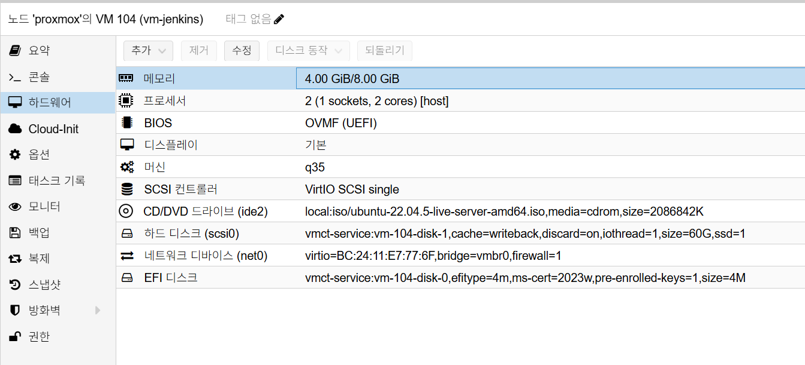

Jenkins Installation
개요
이 문서는 VM 기반 Jenkins 네이티브 설치(apt + systemd) 절차를 정의합니다.
사전 조건
- OS: Ubuntu 22.04 LTS
- VM 리소스:
2 vCPU / 4GB ~ 8GB RAM - 디스크: OS
60GB - Jenkins 버전:
2.516.1 - 도메인:
jenkins.semtl.synology.me - Reverse Proxy 경유 노출
Proxmox VM H/W 참고 이미지
아래 이미지는 Proxmox Hardware 탭 기준의 Jenkins VM 구성 예시입니다.

캡션: 2 vCPU, 4GB ~ 8GB RAM, q35, OVMF (UEFI), OS Disk 60GB, vmbr0
배치 원칙
- Jenkins Controller는 VM에 단독 배치
- Jenkins Agent는 Kubernetes에서 실행(향후 연동)
- Artifact/Backup/Object Storage는 MinIO 연동(향후 연동)
- 메모리는
4GB를 기본 할당으로 두고 필요 시8GB까지 확장
설치 절차
1. Java 및 Jenkins 저장소 설정
# 패키지 인덱스 갱신
sudo apt update
# Java 21 및 기본 도구 설치
sudo apt install -y openjdk-21-jre ca-certificates curl gnupg
# Jenkins 저장소 키 등록
sudo install -m 0755 -d /etc/apt/keyrings
curl -fsSL https://pkg.jenkins.io/debian-stable/jenkins.io-2023.key \
| gpg --dearmor \
| sudo tee /etc/apt/keyrings/jenkins-keyring.gpg >/dev/null
sudo chmod a+r /etc/apt/keyrings/jenkins-keyring.gpg
# Jenkins 저장소 등록
echo "deb [signed-by=/etc/apt/keyrings/jenkins-keyring.gpg] \
https://pkg.jenkins.io/debian-stable binary/" \
| sudo tee /etc/apt/sources.list.d/jenkins.list >/dev/null
# NO_PUBKEY 7198F4B714ABFC68 대응(키 병합)
gpg --no-default-keyring --keyring ./jenkins-extra.gpg \
--keyserver hkps://keyserver.ubuntu.com \
--recv-keys 7198F4B714ABFC68
gpg --no-default-keyring --keyring ./jenkins-extra.gpg --export \
| sudo tee -a /etc/apt/keyrings/jenkins-keyring.gpg >/dev/null
rm -f ./jenkins-extra.gpg
sudo chmod a+r /etc/apt/keyrings/jenkins-keyring.gpg
2. Jenkins 2.516.1 설치
# 저장소 반영
sudo apt update
# 설치 가능한 버전 확인
apt-cache madison jenkins
# Jenkins 2.516.1 설치
sudo apt install -y jenkins=2.516.1
# 자동 시작 활성화(초기 설정 적용 전까지는 중지 상태 유지)
sudo systemctl enable jenkins
sudo systemctl stop jenkins || true
3. 초기 관리자 계정/비밀번호 사전 지정(필수)
# 초기 관리자 계정 정보 파일 생성(이후 단계에서 동일 값 재사용)
sudo tee /var/lib/jenkins/jenkins-admin.env >/dev/null <<'EOF'
JENKINS_ADMIN_ID='admin'
JENKINS_ADMIN_PASSWORD='패스워드입력'
JENKINS_URL='https://jenkins.semtl.synology.me/'
EOF
sudo chown jenkins:jenkins /var/lib/jenkins/jenkins-admin.env
sudo chmod 600 /var/lib/jenkins/jenkins-admin.env
# 변수 로드(파일 권한 600이므로 sudo로 읽기)
JENKINS_ADMIN_ID=$(sudo sed -n "s/^JENKINS_ADMIN_ID='\\(.*\\)'$/\\1/p" /var/lib/jenkins/jenkins-admin.env)
JENKINS_ADMIN_PASSWORD=$(
sudo sed -n "s/^JENKINS_ADMIN_PASSWORD='\\(.*\\)'$/\\1/p" \
/var/lib/jenkins/jenkins-admin.env
)
JENKINS_URL=$(sudo sed -n "s/^JENKINS_URL='\\(.*\\)'$/\\1/p" /var/lib/jenkins/jenkins-admin.env)
# setup wizard 비활성 옵션 적용
sudo mkdir -p /var/lib/jenkins
echo "2.0" | sudo tee /var/lib/jenkins/jenkins.install.UpgradeWizard.state >/dev/null
echo "RUNNING" \
| sudo tee /var/lib/jenkins/jenkins.install.InstallUtil.lastExecVersion >/dev/null
# 초기 관리자 계정 재생성/비밀번호 강제 적용 스크립트 배치(1회용)
sudo mkdir -p /var/lib/jenkins/init.groovy.d
sudo tee /var/lib/jenkins/init.groovy.d/01-reset-admin-user.groovy >/dev/null <<EOF
import jenkins.model.*
import jenkins.model.JenkinsLocationConfiguration
import hudson.security.*
import hudson.model.User
def instance = Jenkins.get()
def hudsonRealm = new HudsonPrivateSecurityRealm(false)
instance.setSecurityRealm(hudsonRealm)
def user = User.getById("${JENKINS_ADMIN_ID}", false)
if (user != null) {
user.delete()
}
hudsonRealm.createAccount("${JENKINS_ADMIN_ID}", "${JENKINS_ADMIN_PASSWORD}")
def strategy = new FullControlOnceLoggedInAuthorizationStrategy()
strategy.setAllowAnonymousRead(false)
instance.setAuthorizationStrategy(strategy)
def jlc = JenkinsLocationConfiguration.get()
jlc.setUrl("${JENKINS_URL}")
jlc.save()
// Controller에서 빌드를 막아 "built-in node" 경고를 제거하고 전용 Agent 사용을 강제한다.
instance.setNumExecutors(0)
instance.save()
EOF
sudo chown -R jenkins:jenkins /var/lib/jenkins/init.groovy.d
sudo chown jenkins:jenkins \
/var/lib/jenkins/jenkins.install.UpgradeWizard.state \
/var/lib/jenkins/jenkins.install.InstallUtil.lastExecVersion
주의:
- 여기서 지정한
JENKINS_ADMIN_ID,JENKINS_ADMIN_PASSWORD값을 이후 CLI/검증 명령에서도 동일하게 사용합니다. - 비밀번호에
#가 포함되면 작은따옴표로 감싸서 지정합니다. - 예:
JENKINS_ADMIN_PASSWORD='패스워드입력'
4. 플러그인 목록 준비
기본 설치에서는 Kubernetes 관련 플러그인을 포함하지 않습니다. Kubernetes 플러그인은 Agent 연동 시점(7장)에서 추가 설치합니다.
# Jenkins 플러그인 목록 생성
sudo tee /var/lib/jenkins/plugins.txt >/dev/null <<'EOF'
workflow-aggregator
git
gitlab-plugin
gitlab-api
configuration-as-code
docker-workflow
blueocean
oic-auth
matrix-auth
role-strategy
credentials-binding
aws-credentials
artifact-manager-s3
pipeline-utility-steps
EOF
sudo chown jenkins:jenkins /var/lib/jenkins/plugins.txt
플러그인 구성 기준:
- 기본 CI/CD:
workflow-aggregator,git,configuration-as-code,docker-workflow,blueocean,oic-auth,matrix-auth,role-strategy,credentials-binding - GitLab 연동 보강:
gitlab-plugin,gitlab-api - MinIO(S3)/향후 연동 보강:
aws-credentials,artifact-manager-s3,pipeline-utility-steps
5. 플러그인 설치 적용(Jenkins CLI)
# Jenkins 기동
sudo systemctl start jenkins
sleep 10
sudo systemctl status jenkins --no-pager
# Jenkins HTTP 준비 대기
until curl -fsS http://127.0.0.1:8080/login >/dev/null; do sleep 2; done
# Jenkins CLI 다운로드
curl -fsSL -o /tmp/jenkins-cli.jar http://127.0.0.1:8080/jnlpJars/jenkins-cli.jar
# 관리자 계정 정보 로드(3단계와 동일)
JENKINS_ADMIN_ID=$(sudo sed -n "s/^JENKINS_ADMIN_ID='\\(.*\\)'$/\\1/p" \
/var/lib/jenkins/jenkins-admin.env)
JENKINS_ADMIN_PASSWORD=$(
sudo sed -n "s/^JENKINS_ADMIN_PASSWORD='\\(.*\\)'$/\\1/p" \
/var/lib/jenkins/jenkins-admin.env
)
# 인증 확인(200 응답 확인)
curl -i --user "${JENKINS_ADMIN_ID}:${JENKINS_ADMIN_PASSWORD}" \
http://127.0.0.1:8080/me/api/json
# 1회 적용 스크립트 비활성화(재시작 시 admin 재생성 방지)
sudo mv /var/lib/jenkins/init.groovy.d/01-reset-admin-user.groovy \
/var/lib/jenkins/init.groovy.d/01-reset-admin-user.groovy.done
# plugins.txt 기반 플러그인 설치 후 Jenkins 재시작
PLUGINS="$(tr '\n' ' ' </var/lib/jenkins/plugins.txt)"
java -jar /tmp/jenkins-cli.jar -http \
-s http://127.0.0.1:8080/ \
-auth "${JENKINS_ADMIN_ID}:${JENKINS_ADMIN_PASSWORD}" \
install-plugin ${PLUGINS} -restart
방화벽/포트 체크
- VM 내부 포트:
8080,50000 - Reverse Proxy 경유 시 외부 공개는
443만 사용
설치 검증
# Jenkins 버전 확인
curl -fsSI http://127.0.0.1:8080/login | grep -i '^X-Jenkins:'
# 외부 URL 응답 확인
curl -I https://jenkins.semtl.synology.me
# 관리자 계정 변수 로드(3단계와 동일)
JENKINS_ADMIN_ID=$(sudo sed -n "s/^JENKINS_ADMIN_ID='\\(.*\\)'$/\\1/p" \
/var/lib/jenkins/jenkins-admin.env)
JENKINS_ADMIN_PASSWORD=$(
sudo sed -n "s/^JENKINS_ADMIN_PASSWORD='\\(.*\\)'$/\\1/p" \
/var/lib/jenkins/jenkins-admin.env
)
# 주요 플러그인 설치 확인
curl -fsSL --user "${JENKINS_ADMIN_ID}:${JENKINS_ADMIN_PASSWORD}" \
"http://127.0.0.1:8080/pluginManager/api/json?depth=1" \
| grep -E '"shortName":"(oic-auth|artifact-manager-s3|aws-credentials|gitlab-plugin|gitlab-api)"'
# Jenkins URL 설정 확인(빈 값이면 안 됨)
JENKINS_URL_PATTERN='<jenkinsUrl>https://jenkins\.semtl\.synology\.me/?</jenkinsUrl>'
if [ -f /var/lib/jenkins/jenkins.model.JenkinsLocationConfiguration.xml ]; then
sudo grep -E "${JENKINS_URL_PATTERN}" \
/var/lib/jenkins/jenkins.model.JenkinsLocationConfiguration.xml
else
sudo grep -E "${JENKINS_URL_PATTERN}" /var/lib/jenkins/config.xml
fi
검증 기준:
- Jenkins 로그인 페이지 응답
- Jenkins 버전 헤더(
X-Jenkins) 응답 확인 - OIDC/MinIO/GitLab 관련 주요 플러그인 설치 확인
Jenkins URL이 비어 있지 않음- Reverse Proxy 도메인 접속 가능
7. Kubernetes 연동 문서
Kubernetes Agent 연동 절차는 별도 문서에서 관리합니다.
8. 기본 설치 스냅샷
스냅샷 생성 전 아래 정리 작업을 먼저 수행합니다.
sudo rm -rf /tmp/*
sudo rm -rf /var/tmp/*
sudo apt autoremove -y
sudo apt clean
sudo journalctl --vacuum-time=1s
cat /dev/null > ~/.bash_history && history -c
- 시점:
2.516.1설치 + 초기 관리자 계정 검증 + 플러그인 설치 검증 완료 후 - Proxmox에서 Jenkins VM 선택
Snapshots > Take Snapshot실행- 권장 이름:
jenkins-install-clean-v1 - 설명 예시:
text
[설치]
- jenkins : 2.516.1
- jenkins_url : https://jenkins.semtl.synology.me
- reverse proxy : synology(443) -> jenkins vm(8080)
- controller : vm(native)
- installed_plugins :
- workflow-aggregator, git, gitlab-plugin, gitlab-api
- configuration-as-code, docker-workflow, blueocean
- oic-auth, matrix-auth, role-strategy, credentials-binding
- aws-credentials, artifact-manager-s3, pipeline-utility-steps
- id : admin
- pw : 패스워드(설치 시 지정값)
Include RAM은 비활성화(권장)
참고
- MinIO 연동은 별도 문서로 분리 예정
- Kubernetes Agent 연동은 별도 문서로 분리 예정